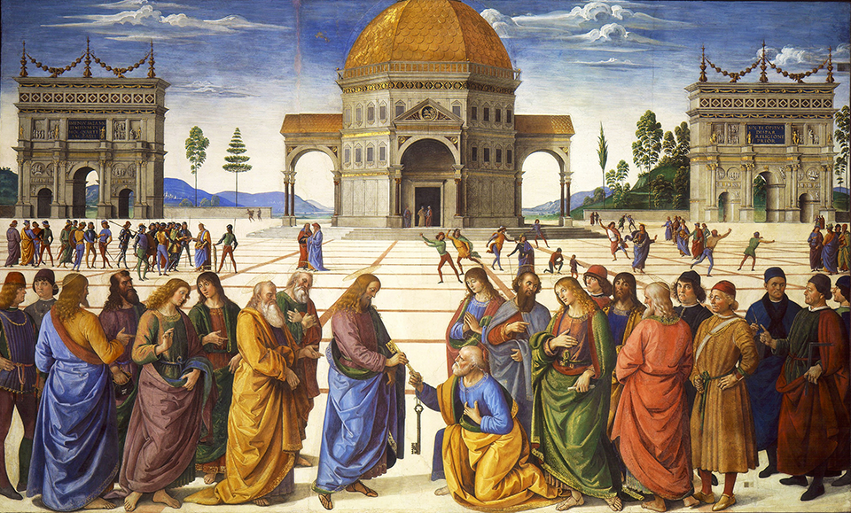

Reflexões sobre o filme Conclave (2024)
A incessante tentativa de Hollywood de difamar a Santa Madre Igreja...
Leia maisSobre o pecado original
Os primeiros capítulos de Gênesis são, não raro, usados em releituras gnósticas da bíblia
Leia mais